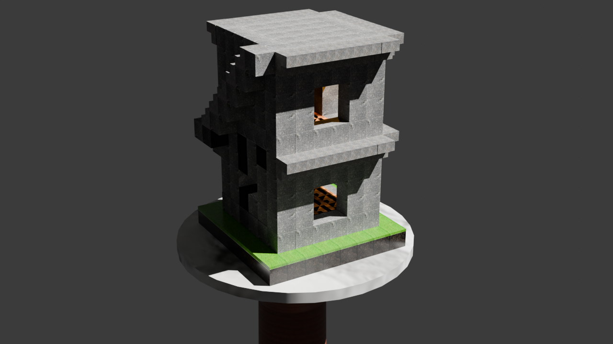
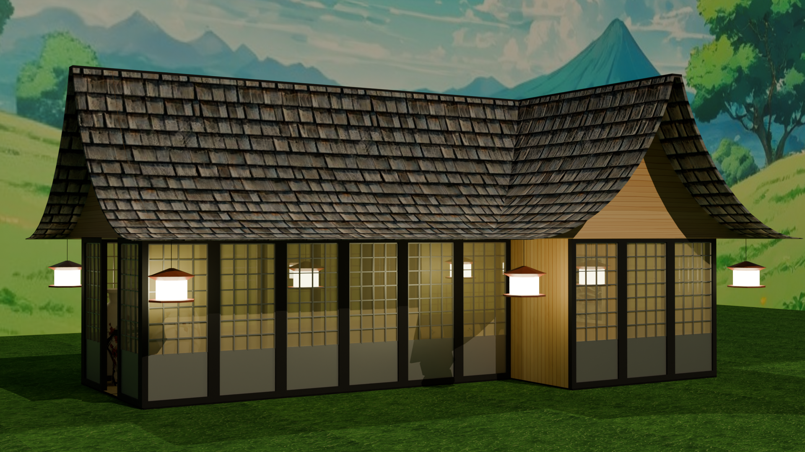
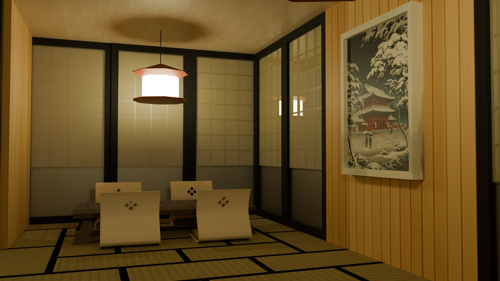

Blender
Blender is a 3D designing programm used mainly for animations and designing game elements. We use this programm in Module 2 to learn about 3D design and using these designs in another programm called Unity. Here on this page I will show my final results of the projects I have done.

Back to Home
Back to Projects
In this assignment the goal was creating a minecraft house on a pedestal.
In this project we had to make a Japanese house with textures and interior objects.
Using new tools and using logical scaling was a nice way to further develop 3D designing skills.
We have a walktrough that guides you step by step so you come out with a nice finished product, so learning it is easy and just takes some time.


The Japanese house.